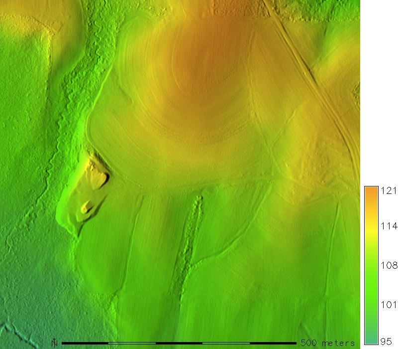
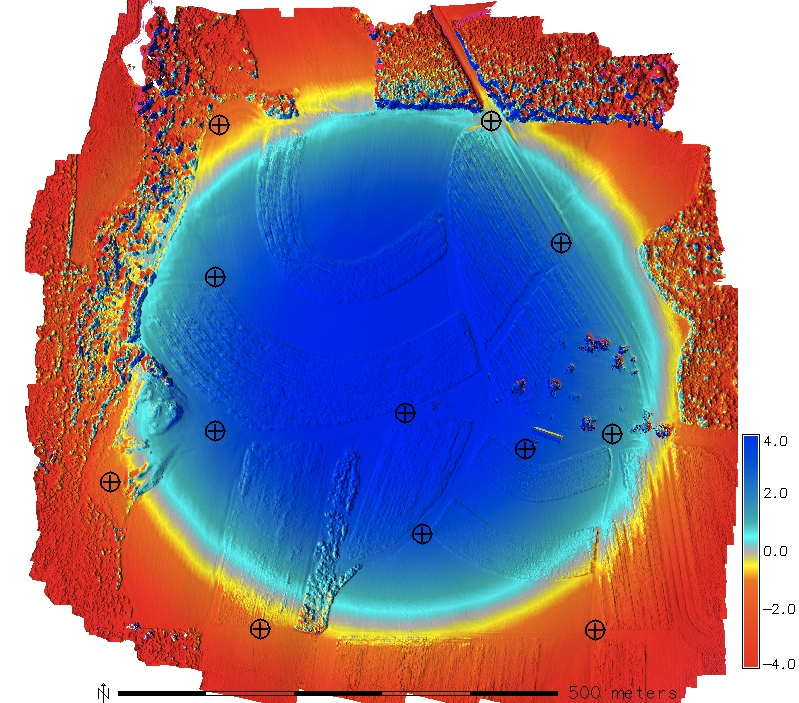
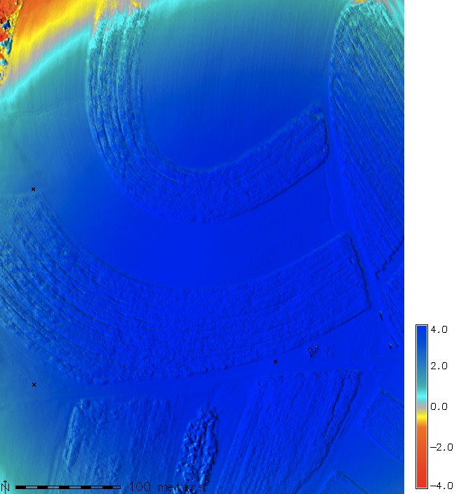
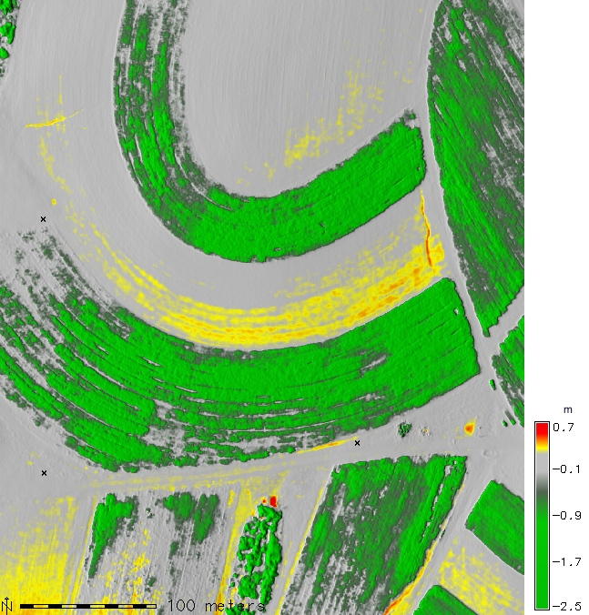
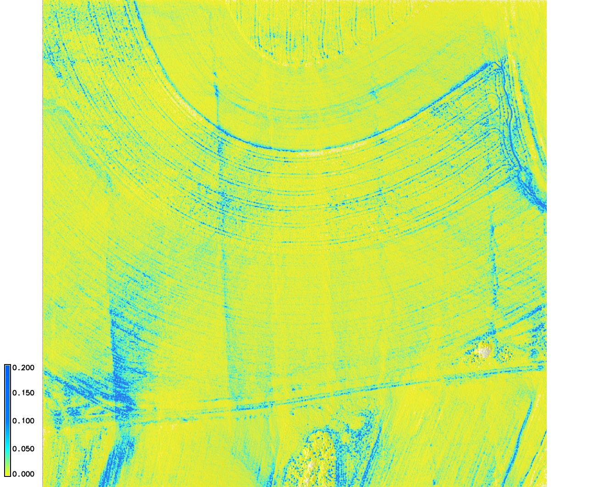
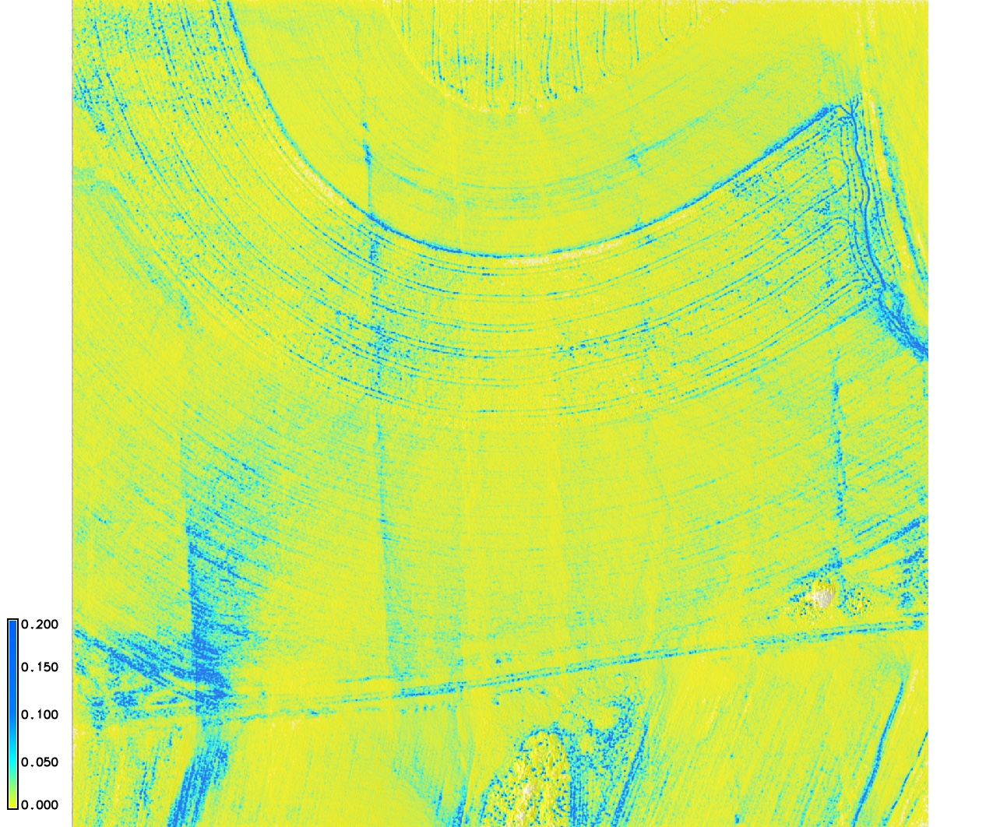
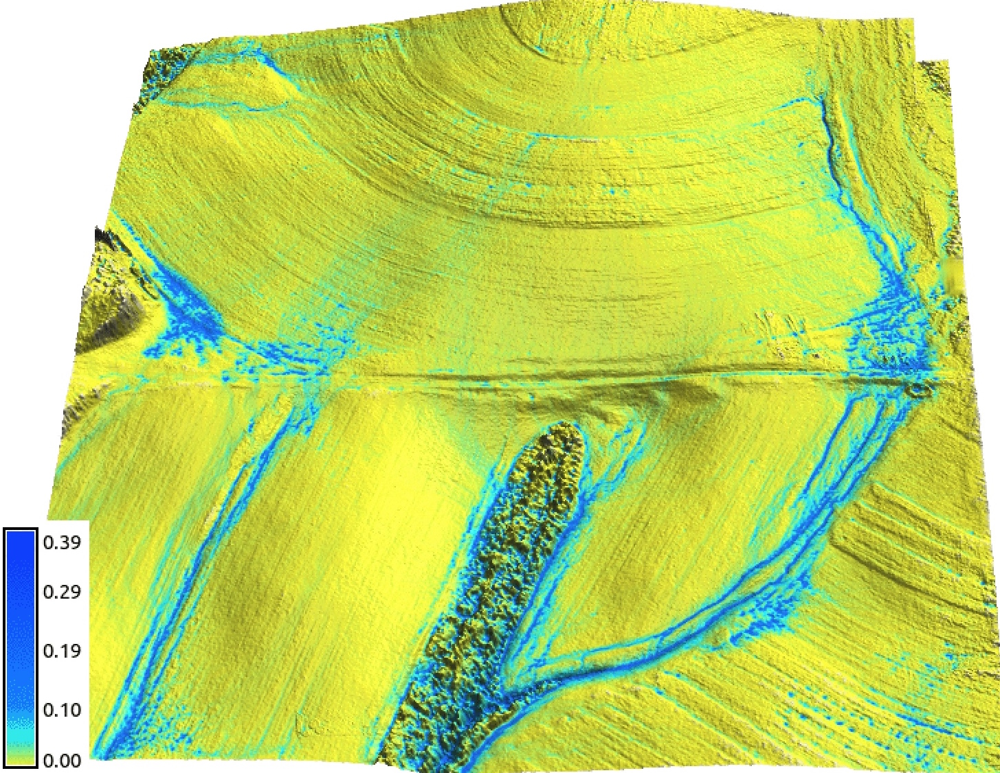

Flow analysis using sUAS and lidar data
Helena Mitasova, Justyna Jeziorska, Anna Petrasova, Vaclav Petras, Thomas Zajkowski
North Carolina State University, Raleigh, NC
Center for Geospatial Analytics,
Department of Marine, Earth and Atmospheric Sciences,
NextGen Air Transportation
Wroclaw University, Poland
Advances in 3D mapping
- Lidar and sUAS: increased capacity to
map 3D landscapes and assess the change on (almost) continuous basis
- Improved prediction of flooding and surface water flow

Study site
- NCSU experimental farms
- Surveyed by airborne lidar: 2001, 2013, 2015
- Test area for sUAS technologies


Lidar data
- Lidar survey by Leica ALS-70 in 2013
- multiple return point cloud with point density ~2 pts/m2
- DEM and DSM interpolated at 0.3m resolution


sUAS data
- Trimble UX5 system, flying at 138 m, camera 4900 x 3200
- Orthophoto 0.04 m resolution
- Digital Surface Model 0.15 m res, 172 pts/m2
- Repeated surveys for crop growth monitoring


winter and summer DSM
sUAS data properties
- image overlap > 9, almost 1 million tie points
- processed by AGISOFT, Trimble, OpenDroneMap
- 11 GCPs installed to improve accuracy


distribution of vertical and horizontal error, avg. camera error 0.3,1.9,0.6 m
sUAS data processing: GCP
Difference between DSM processed without GCPs and with 11 GCPs (AGISOFT)
(mean=0.06m, mean_abs=2.8m, bowl effect)


sUAS data processing comparison
AGI - Trimble: mean=-0.14m, mean_abs=0.30m,
bare fields < 15cm dif, corn < 50cm dif, slight NS tilt
AGI - OSM: bowl effect with ~1m errors


Lidar and sUAS data comparison
- Lidar bare 2013 - AGISOFT_GCP 2014: mean=-0.29m, mean_abs=0.40m
- reflects mapping errors and terrain/vegetation changes


LCP MFD flowrouting
- DSMs with many true depressions
- least cost path method (LCP): no depression filling
- multiple flow direction (MFD) routing: captures flow dispersion
Watershed analysis based on lidar DEM
- Watershed boundaries, streams extracted using LCP MFD
- sUAS mapping extent adjusted to entire watershed
- improved representation of streams compared to county data

Watershed partitioning using sUAS DSM
- LCP MFD flowtracing - includes dispersed water but no accumulated water in depressions
(add img)
- watershed boundaries (color) compared with lidar (lines)

LCP MFD flowaccumulation: lidar, sUAS
- level of detail and noise influence the LCP MFD flowrouting (0.3m, 0.3m, 0.18m)
- tillage impact can be modeled directly, based on microtopography captured by sUAS

Path sampling method for flow simulations
Robust stochastic method for rough surfaces


Sensitivity to sUAS DSM artifacts
Shifts between swaths on Trimble processed DSM (without GCPs?)
leads to artificial flow pattern
 -->

-->

left: difference between trimble and agisoft processed DSM without GCPs - demo flight
Simulated water depth on sUAS DSM
- Simulated surface water depth captures flow redirection by tillage
- Comparison of flow depth for June (with corn) from agisoft and trimble
- ADD NEW IMAGES
Change in flow pattern based on sUAS data
Flow simulation for January and June 2015


Evolving overland flow based on sUAS data
agisoft june

Evolving overland flow based on sUAS data
trimble june

Conclusions
- GCP crucial for proper DSM geometry
- High level of detail requires robust flowrouting that can handle depressions
- Flow routing through cornfields runs on ground and corn
NCSU OSGeoREL
geospatial.ncsu.edu/osgeorel/
- NCSU Open Source Geospatial Research and Education Laboratory
- Member of Geo4all initiative: global network for foss4g education
- NCSU NA leading lab: GRASS GIS development, courses, research projects
- GitHub: https://github.com/ncsu-osgeorel